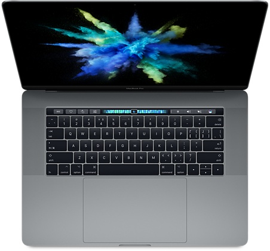

比如像外星人（Alienware）ALW13ER-3608 这款笔记本电脑，很强的第六代酷睿 I5-6200U 处理器,能达到 2.80GHz，8G DDR3L 1600MHz 的内存，GRX 960M 2GB 的独立显卡，13.3 英寸显示器 1920*1080 的分辨率，这个配置可以说大型的单机游戏玩起来没有一点压力。但是有利就有弊，那么比如说笔记本电脑价钱太贵，其实这个配置说实在的，价钱也贵不到太离谱。还有就是太厚，笔记本电脑发明出来就是方便携带，外星人这款笔记本我觉得完全可以控制一下厚度，研发新的配件让它整体的厚度变薄一点，那样的话基本上就完美了。